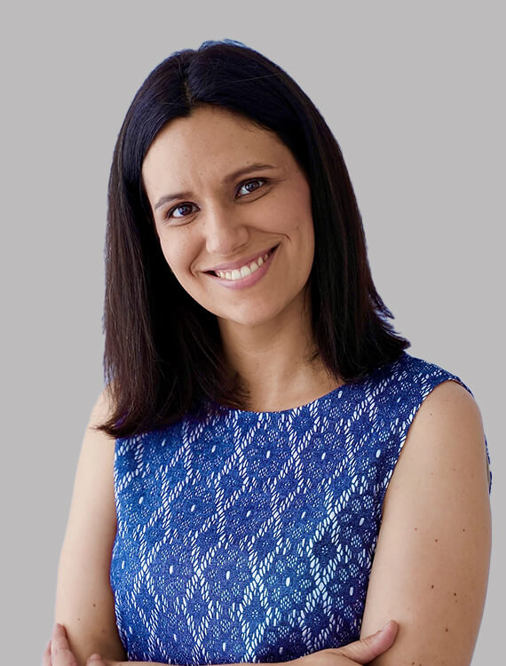

Clínica de Psicoterapia em Porto e Barcelos
Chegou a Sua Vez de Se Sentir Bem Consigo!
A verdadeira transformação acontece quando ELIMINA aquilo que está entre si e a vida de bem-estar que PODE ter. Descubra o nosso Método Consciência exclusivo que trata a origem dos seus problemas.
O Método Consciência
Tratamos a Origem, Não Apenas os Sintomas
Uma Abordagem Revolucionária
O nosso Método Consciência é exclusivo da nossa clínica e foca-se em encontrar e tratar A ORIGEM dos seus sintomas e dificuldades. Combinamos quatro psicoterapias cientificamente comprovadas:
- EMDR - Eye Movement Desensitization and Reprocessing
- Hipnose Clínica - Para acesso ao inconsciente
- Terapia Mente-Corpo - Integração psicossomática
- Neurobiologia Interpessoal - Regulação emocional

Problemas que Tratamos
Especialização em Diversas Áreas da Saúde Mental
Ansiedade e Pânico
Tratamento especializado para ansiedade, ataques de pânico e fobias com técnicas comprovadas.
Saber mais →Depressão
Abordagem integrativa para superar a depressão e recuperar o bem-estar emocional.
Saber mais →Trauma e EMDR
Especialização em EMDR para tratamento de trauma e stress pós-traumático.
Saber mais →Burnout Profissional
Programa especializado para executivos e profissionais com burnout.
Saber mais →Experiência Comprovada
Sabemos Como O Ajudar...
Dra. Mónica de Sá
Diretora Clínica e Fundadora

Especialista em EMDR e Hipnose Clínica
Com mais de 15 anos de experiência em Psicologia Clínica, a Dra. Mónica de Sá é especialista em EMDR e Hipnose Clínica. Fundou o Espaço Consciência em 2018 com a missão de tratar a origem do sofrimento humano através do inovador Método Consciência.
Formação
- Mestrado em Psicologia Clínica (2010)
- Especialização em EMDR (2012)
- Pós-Graduação em Hipnose Clínica (2014)
Experiência
Mais de 15 anos tratando milhares de pessoas, especializando-se em transtornos de ansiedade, depressão, trauma e desenvolvimento pessoal.
Os Nossos Consultórios
Espaços Acolhedores para a Sua Transformação


Porto
Endereço: Rua de Camões 218, 4º andar sala 3
4000-138 Porto
Horário: Segunda a Sexta: 10:00 - 19:00
Ligar AgoraBarcelos
Endereço: Avenida Alcaides Faria 333B Sala 3
4750-106 Arcozelo, Barcelos
Horário: Segunda a Sexta: 10:00 - 19:00
Ligar AgoraPronto para Começar a Sua Transformação?
Não sabemos qual a sua maior dor ou desafio hoje, mas sabemos que o vamos ajudar a sair dessa situação
Marque a Sua Consulta
Ou ligue diretamente: +351 935 522 267